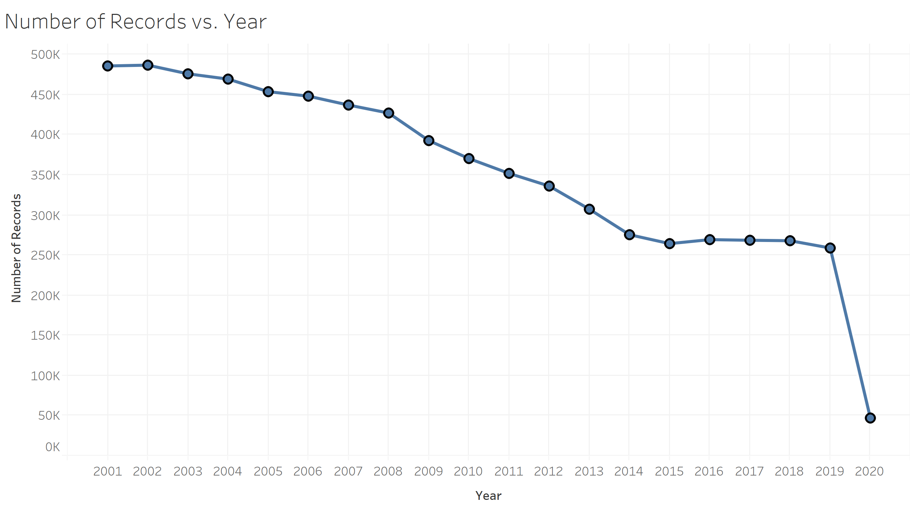
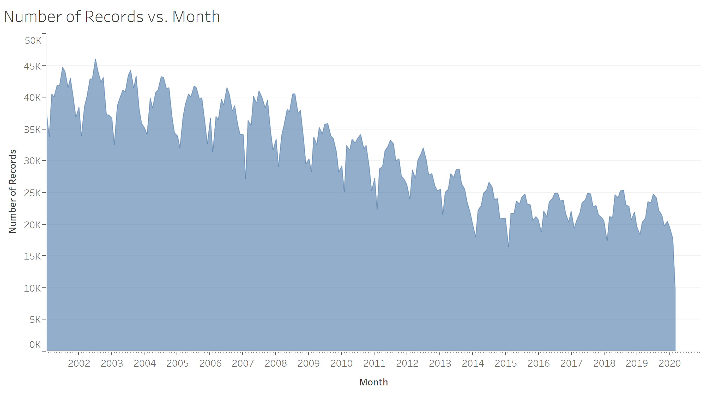
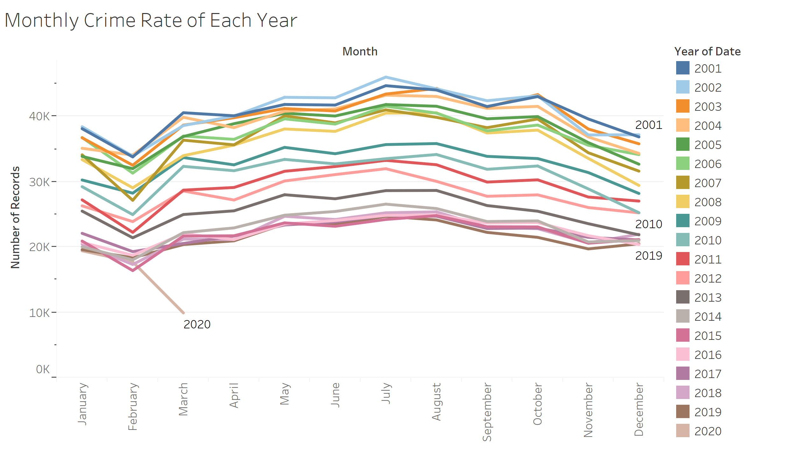
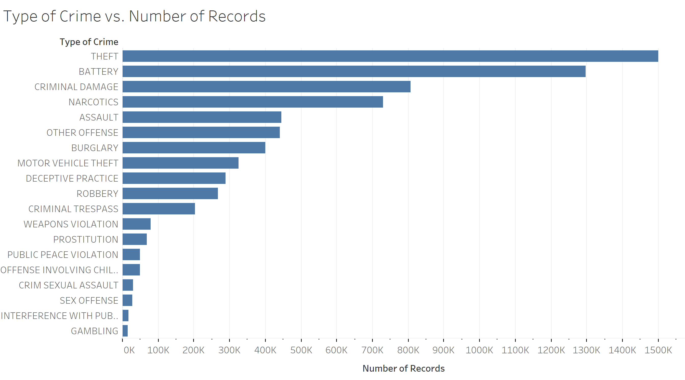
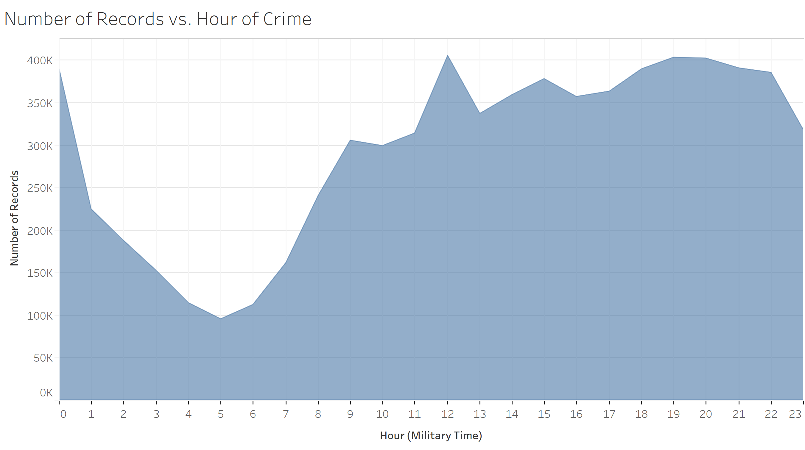
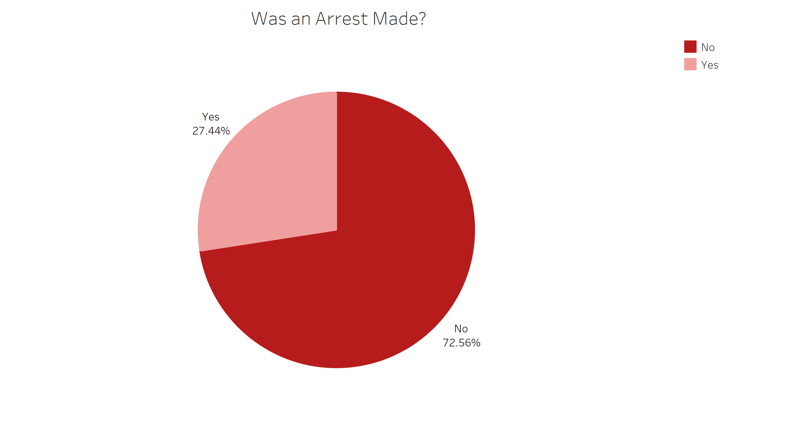
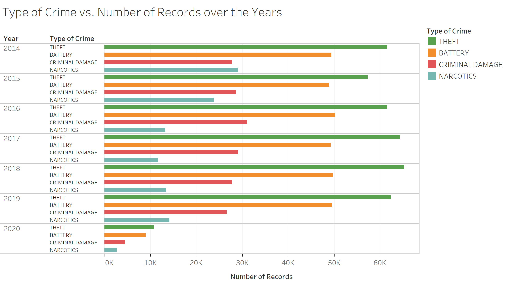
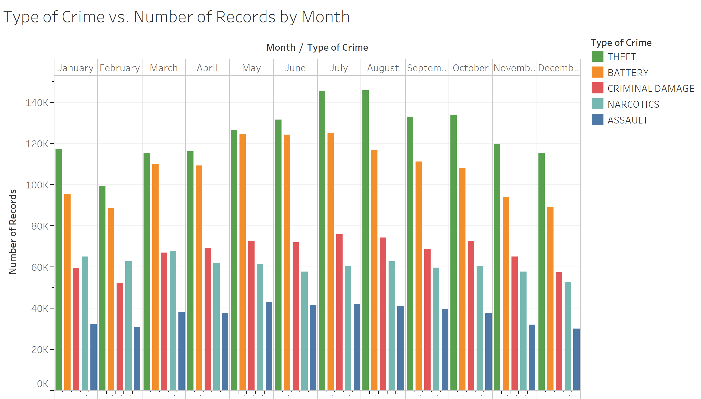
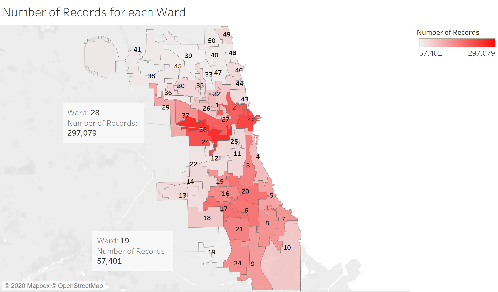
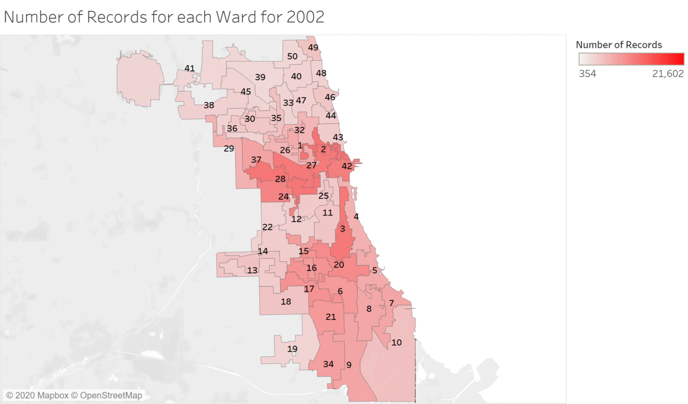

Exploratory Visual Analysis
Phase Ⅰ
In the first phase of my analysis, I provide relatively simple visualizations
of the data so I could get an overview of the different variables. Namely:
check how they are distributed, whether there are any notable data quality issues,
if there are any surprising relationships between variables,
as well as to perform a few sanity checks for patterns I expect to see.

As a first step in our analysis, we take a look at the trend of number of
records per year. As we can see, there was a steady decline in crime
from 2001 with nearly half a million crimes, until 2014 with roughly a
quarter million cases. Since then, the yearly crime rate stayed
relatively consistent. The decrease in crimes is consistent with a
nation-wide trend that started in the 1990s, after politicians enacted
harshly punitive policies. This consistency is my first "sanity check".
See associated article in The Atlantic:
What Caused the Great Crime Decline in the U.S.?

If we increase the resolution by looking at different months over the
years, we notice a yearly pattern. Crime rates tend to peak in the middle
of each year. Additionally, there seems to be a difference of 10 to 15
thousand crimes between each year's lowest and highest months. This is a
first step in addressing my overarching question since we see that at the
end of each year there's an expected rise of 5,000 to 10,000 in the
amount of crimes per month by the middle of the next year. It shows that
previous crimes, at least by their amount, indicate the amount of future
crime. It would be intereting to see, for example, if we can get an
indication for properties of these future crimes, such as location or
type.

Above, we can see each year's monthly crime rate (an alternative version of
the previous visualization). It shows just how similar the monthly crime
rates of each year are. The pattern presented
here indicates that by the summer months of 2020, one might expect a rise
of about 5,000 in the monthly crime rate. However, we need to keep in mind
current events and common sense when making guesses about the future.
Due to the global health crisis surrounding COVID-19, people are staying
in their homes. This discourages criminals from committing acts of
theft, so it is reasonable to expect a decrease in theft for the next
few months. This explains the significantly lower rate for March in this
graph since theft is the most common crime in Chicago.

As we can see, the most common crimes in the data set are theft and then
battery. Those are follwed by criminal damage and then narcotics by a
relatively large margin, and other crimes are of smaller magnitude and
the differences are smaller and more consistent. This visualization
leaves out the less prominent crime types out of the 36 in the data. A
quick count of the top 7 types here reveales that about 20% of the types
account for 80% of the crimes (5.6M incidents out of 7M). This is
consistent with the famous "Pareto principle" (a.k.a. the 80/20 rule).
The data's follwing this principle serves as another "sanity check".

As detailed above, most crimes happen between 9AM and midnight or
1AM. Between 1AM and 9AM crimes are less common. This makes sense since
most people are sleeping at home during these hours. 5AM is the least
common hour for crimes in Chicago. This too serves as a "sanity check".

Interestingly, the vast majority of incidents included in the dataset
describe a crime where an arrest was not made.
Phase Ⅱ
In the second phase of my analysis, I investigate my initial analysis
questions. For each question, I create a new visualization that might provide
a useful answer or refine previous visualizations to gain further insight.

Here we see the top 4 most common crimes each year since 2014. The
distribution of the types of crimes was the same for earlier years. It
seems that the types of the most common crimes in Chicago does not change
from year to year.

The graph above shows the 5 most common crime types for each month across
all years in the data. The types appear fairly consistent with theft
being the most prominent, followed by battery, then usually criminal
damage, followed by narcotics, and assault. Therefore, the time of year
does not significantly affect the most common types of crime.

After joining a shape file I found online to my original dataset, I was
able to plot a map of the different wards of Chicago. Filtering out the
rows in the original dataset that had a null value for the Ward attribute
left me with 6,478,858 data rows out of the original 7,093,687. As
shown above, the wards at the center, or downtown Chicago, are where most
crimes in the data took place. Additionally, a southern cluster of wards
appears as the second most dangerous part of the city in terms of amount
of incidents. Ward 28 has the highest amount and ward 19 is at the bottom
of the list.

Here we see an animation I created to illustrate how the distribution of
crime rates across different wards in Chicago changes over the years.
Year 2001 was not included since many of the associated rows had null
values for the Ward attribute.
We can see that the 2 clusters described previously (center and south)
stay prominent thorugh most of the years, with the exception of the last
few years, where crimes seem to be centering around ward 42. It would be
interesting to see the same type of animation but for individual types of
crimes.

The animation above illustrates the accumulation of burglary incidents
(indicated by red dots) in ward 42 during the summer months of 2019
(when crime rates peaked). Ward 42 had the highest amount of crimes
for that year. The red boxes surrounding the dots serve to indicate
what appears as a clustering of burglaries. Notice that within each
cluster, it seems that there are sub-clusters of 2-3 burglaries. This
evidence answers my 3rd analysis question. It provides some support for
the idea that burglaries tend to occur near each other (each block here
is 300 to 500 feet wide). However, we don't have data about the criminals
who committed the crime so we don't know if it's (for example) because
the same criminals return to the neighborhood.

Here we look at the same type of visualization seen previously, but for
ward 25, a ward that's on the lower end of crime rates in 2019. The
clusters here are smaller and less dense and it is easier to see a
trend of pairs of burglaries in close proximity (each block here is about
500 feet wide).
Summary
The analysis has familiarized me with important aspects of Chicago's
crimes. I learned about the overall decline in crime rates over the
years, as well as the yearly cycle of these rates. This has given me some
clue about the pattern crimes in Chicago have. I've learned that the most
common crimes by far are theft, battery, criminal damage, and narcotics,
and that these don't seem to change over the years or thorughout
the year. It seems that the most dangerous parts of chicago are its
center (around wards 28 and 42) and its south (around ward 6). The
prominence of different wards does seem to change over time. Lastly,
there was indeed some indication that crime occurs in clusters, yet it
seems to me that we'd need different kinds of data to reveal a real
connection between different incidents (and not a mere coincidence). In a
follow-up analysis, I would link this data to external datasets to see if
it gives me further insight into this clustering.